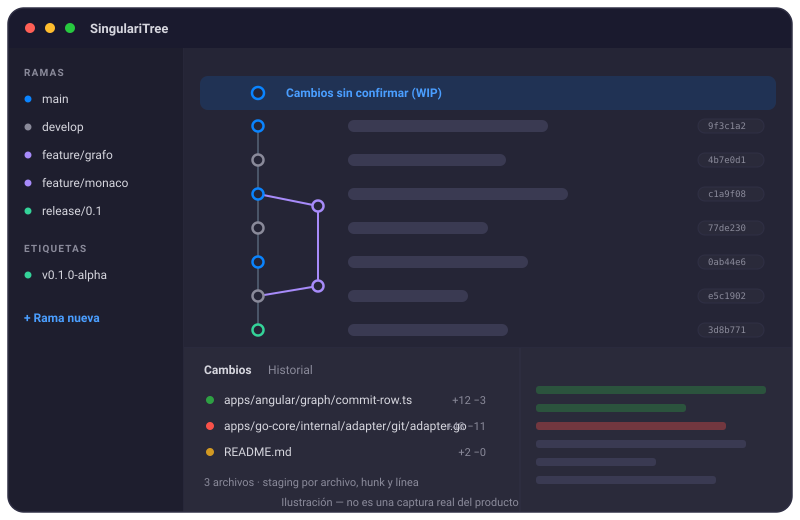

Cliente Git de escritorio · Windows y Linux
SingulariTree
Tu repositorio, en un solo lugar.
Un cliente de Git de escritorio multiplataforma con núcleo Go headless, arquitectura hexagonal y un grafo de commits que se mantiene ágil incluso en repositorios grandes.
En desarrollo activo — la primera versión pública todavía no se ha publicado.
Aviso sobre SmartScreen: la compilación para Windows no está firmada digitalmente, así que Windows puede mostrar una advertencia. Para continuar, elige Más información y después Ejecutar de todas formas.
Las compilaciones de Linux tampoco están firmadas: son versiones preliminares.

Características
Todas las capacidades siguientes están verificadas en el repositorio del proyecto. SingulariTree sigue en desarrollo: lo que ves es hacia dónde va el producto.
-
Multiplataforma
Windows (instalador NSIS y versión portable) y Linux (AppImage y deb).
-
Núcleo Go headless
Arquitectura hexagonal: el contacto con Git ocurre únicamente dentro del núcleo Go, que puede ejecutarse sin interfaz con
--headless(señalGO_CORE_READY). -
Transporte gRPC + HTTP
Comunicación por gRPC con fallback a HTTP, sobre un contrato proto-first (paquete
singularitree.v1) generado conbuf generate. -
El grafo y los archivos son la verdad
SQLite guarda solo una caché de metadatos y estado de interfaz: nunca almacena objetos Git.
-
Grafo virtualizado
Grafo de commits virtualizado con filtro, panel de detalle de cada commit y una fila destacada para los cambios en curso (WIP).
-
Staging granular
Prepara cambios por archivo, por hunk y por línea, revisa los diffs en un visor Monaco, y usa reset soft/mixed/hard, stash apply/pop/drop y merge con los conflictos a la vista.
-
Multi-repositorio
Espacios de trabajo y pestañas para varios repositorios, búsqueda de commits entre repos, presets de git-flow y enlaces profundos
singularitree://. -
Watcher en tiempo real
Un watcher real basado en
fsnotifyrefleja de inmediato los cambios del árbol de trabajo.
Tecnología
- Angular 22
- Electron 41
- Go 1.25
- Arquitectura hexagonal
- Contract-first (buf)
Descargas
Todas las compilaciones están sin firmar y son versiones preliminares en desarrollo. Se publicarán en GitHub Releases. La primera versión pública todavía no se ha publicado: los enlaces llevan al listado de GitHub Releases.
-
Windows Instalador NSIS · versión portableDescargar para Windows
-
Linux AppImage · debDescargar para Linux